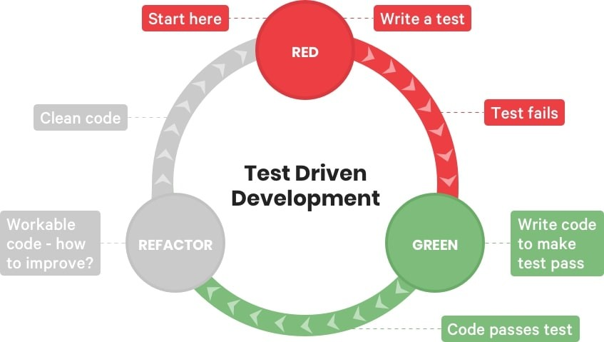
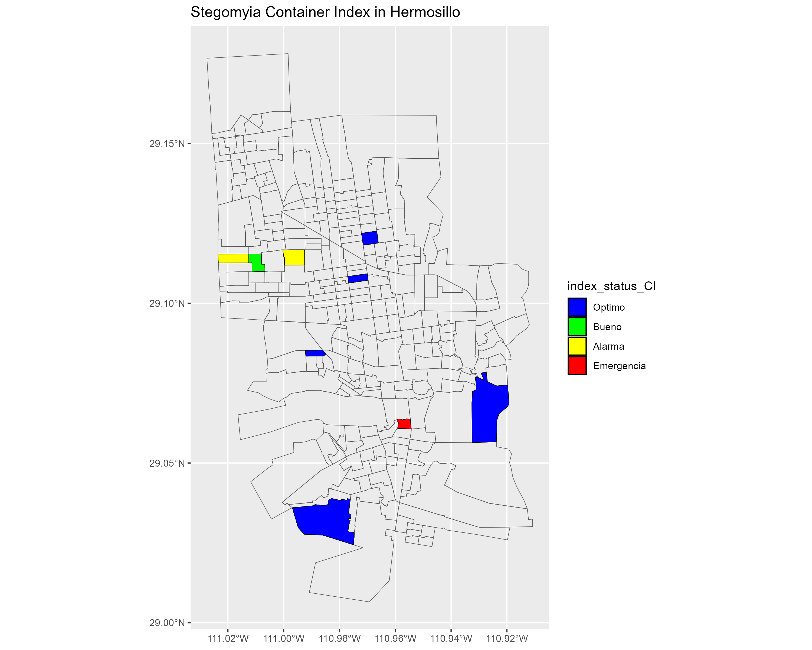
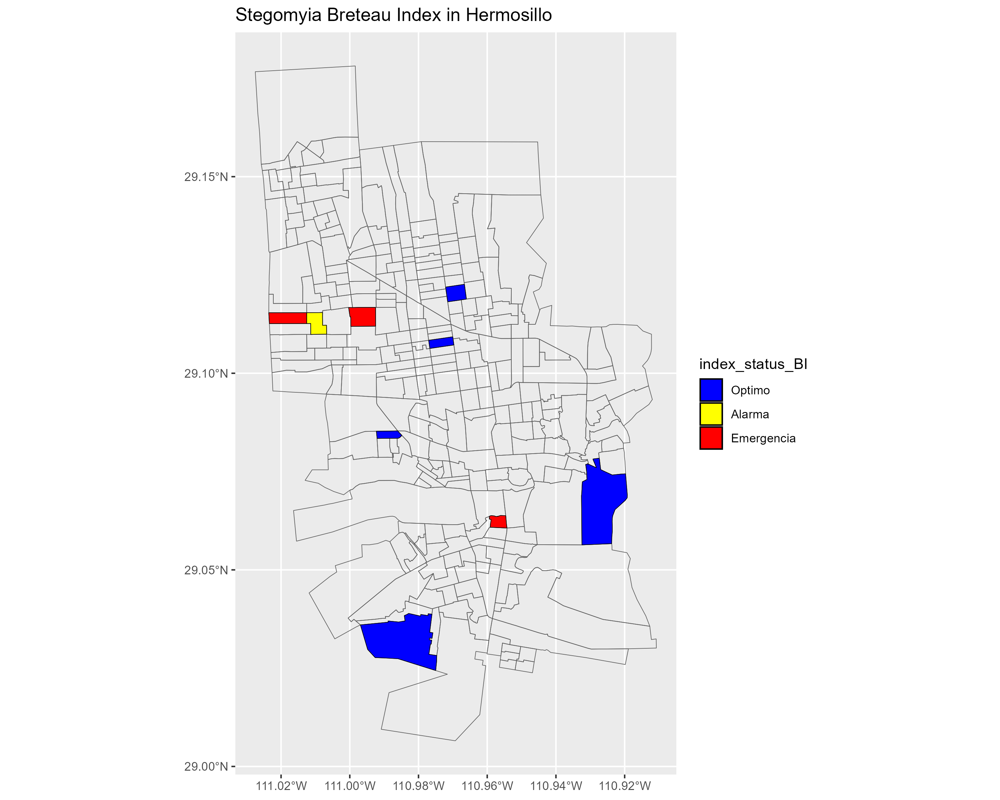

3 Reporte tecnico
3.1 Marco teórico
3.1.1 Vigilancia Epidemiológica y Entomológica del Dengue
Las enfermedades transmitidas por vectores (ETV), son padecimientos en los que un artrópodo (mosquitos, chinches, garrapatas, etc.) actúa como agente infeccioso. A este tipo de artrópodos se le denomina “vector” (CENAPRECE (2024)). Este vector actúa como hospedero y/o transmisor de la enfermedad, durante su ciclo de vida tienen diferentes hospederos periodo en el cual adquiere la enfermedad y puede transmitirla a hospederos vertebrados como los humanos (CENAPRECE (2024)). Algunos ejemplos de este tipo de enfermedades son: paludismo, dengue, leishmaniasis, oncocercosis, tripanosomiasis, rickettsiosis, fiebre del oeste del Nilo, fiebre chikungunya, erliquiosis, anaplasmosis y otras arbovirosis (Braks et al. (2003); Basile Kamgang et al. (2013); CENAPRECE (2024)).
Las ETV son un problema de salud pública en México, se estima que donde se localiza la mayor parte de centros agrícolas, ganaderos, industriales, pesqueros, petroleros y turísticos, es decir; en cerca del 60 % del territorio nacional, se tienen condiciones ambientales que favorecen su transmisión (Braks et al. (2003); CENAPRECE (2024)). Entre ellas, el dengue representa una grave amenaza, con brotes recurrentes en diversas regiones del país (Braks et al. (2003); CENAPRECE (2024)). Para prevenir y controlar eficazmente las enfermedades antes mencionadas, en México existen los programas de vigilancia entomológica y control integral de enfermedades transmitidas por vectores a nivel federal y estatal (Braks et al. (2003); CENAPRECE (2024)).
3.1.1.1 Vigilancia Epidemiológica:
La vigilancia epidemiológica del dengue comprende recopilar, analizar y difundir sistemáticamente información sobre la enfermedad. Sus objetivos incluyen la detección temprana de brotes, la medición de la carga de la enfermedad, el seguimiento de las tendencias, la evaluación del impacto social y económico (Bowman, Runge-Ranzinger, and McCall (2014); Weetman et al. (2018); South-East Asia. (2011); Organization (2016); CENAPRECE (2024)). Asimismo, ayuda en la asignación de recursos, planificación de acciones preventivas y de contención. Por ello, la vigilancia epidemiológica es esencial para el control y la gestión eficaz contra la enfermedad (Bowman, Runge-Ranzinger, and McCall (2014); Weetman et al. (2018); South-East Asia. (2011); Organization (2016); CENAPRECE (2024)).
3.1.1.2 Índices Estegomía
Para evaluar la presencia y densidad de los mosquitos Aedes, los programas estatales de prevención y control del dengue utilizan los llamados índices de estegomía. Estos índices cuantifican el riesgo entomológico con respecto a criaderos potenciales y criaderos habitados por larvas o pupas del mosquito Aedes a través del muestreo en campo. El muestreo debe ser uniforme en el área de estudio y la unidad de muestreo básica es la casa o localidad (Garjito et al. (2020); CENAPRECE (2024)). Al muestrear, el objetivo es observar sistemáticamente contenedores de almacenamiento de agua (Tun-Lin et al. (1996); B. Kamgang et al. (2010); Basile Kamgang et al. (2013); Bowman, Runge-Ranzinger, and McCall (2014); Quintero et al. (2015); South-East Asia. (2011); Organization (2016); Garjito et al. (2020); Tedjou et al. (2020)). Los contenedores se examinan para detectar la presencia de larvas y pupas de mosquitos (Garjito et al. (2020)).
La Organización Mundial de la Salud (OMS) (South-East Asia. (2011); Organization (2016); Tedjou et al. (2020)) recomienda el uso de los índices estegomía para evaluar la presencia y la densidad de criaderos de mosquitos en las comunidades (Organization (2016)). Los índices utilizados son el índice de casa positiva (HI), el índice de contenedor positivo y el índice de Breteau (Organization (2016)). En el estado de Sonora el “Programa de Acción Específico de Enfermedades Transmitidas por Vector” (PAE-ETV) usa estos índices para ayudar a determinar las acciones que mitigan el riesgo entomológico (CENAPRECE (2019)). A continuación, se presentan los índices de estegomía empleados por el PAE-ETV (CENAPRECE (2019); Tedjou et al. (2020)).
Índice de casa positiva (HI)
El índice de casa positiva (HI) es definido como la proporción de casas infestadas con larvas o pupas. La OMS (South-East Asia. (2011); Praptowibowo (2015); Organization (2016); Tedjou et al. (2020); Tomia and Tuhatea (n.d.)) recomienda usar la siguiente expresión para su cálculo (Quintero et al. (2015); Praptowibowo (2015); Garjito et al. (2020); Tedjou et al. (2020); Tomia and Tuhatea (n.d.)).
\[ HI = \frac{ \text{Número de casas infestadas} }{ \text{Número de casas inspeccionadas} } \times 100 \tag{3.1}\]
En Sonora el PAE-ETV utiliza este índice HI para monitorear la infestación de casas; además, permite evaluar la presencia, y estimar la distribución del mosquito (Quintero et al. (2015); Garjito et al. (2020); Tedjou et al. (2020)). Este índice considera a las casas como unidad de observación, no toma en cuenta la cantidad de contenedores positivos ni la productividad de esos contenedores (Quintero et al. (2015); Garjito et al. (2020)).
El índice de casa positiva se ha utilizado ampliamente para monitorear los niveles de infestación, pero no toma en cuenta la cantidad de contenedores positivos ni la productividad de esos contenedores (Garjito et al. (2020); Tedjou et al. (2020); Tomia and Tuhatea (n.d.)).
Dentro de un área determinada, el cálculo de este índice asume la misma probabilidad de transmisión del virus. De esta manera, si calculamos el índice HI en una muestra de un sector se puede inferir para todo el sector (Garjito et al. (2020); Tedjou et al. (2020)). La OMS considera el riesgo entomológico en emergencia cuando al menos uno de los índices de estegomía es igual o mayor a 5 (South-East Asia. (2011); Organization (2016); Garjito et al. (2020); Tedjou et al. (2020)).
Índice de contenedor positivo (CI)
El índice de contenedor positivo (CI) se define como la proporción de contenedores con presencia de larvas o pupas de mosquito en relación con todos los contenedores que tienen agua (South-East Asia. (2011); Praptowibowo (2015); Organization (2016); Garjito et al. (2020); Tedjou et al. (2020)). A continuación, se muestra la siguiente expresión para su cálculo (South-East Asia. (2011); Praptowibowo (2015); Organization (2016); Garjito et al. (2020); Tedjou et al. (2020); Tomia and Tuhatea (n.d.)).
\[ CI = \frac{ \text{Número de contenedores infestados} }{ \text{Número de contenedores inspeccionados} } \times 100 \tag{3.2}\]
El índice CI es útil para conocer la proporción de contenedores con agua que tienen larvas o pupas de mosquito, y permite estimar el riesgo en el área estudiada (South-East Asia. (2011); Organization (2016); Garjito et al. (2020); Tedjou et al. (2020)). Este índice ayuda a evaluar la densidad de criaderos en la zona, proporcionando información para identificar las áreas con mayor riesgo de infestación (Quintero et al. (2015); Praptowibowo (2015); Garjito et al. (2020); Tedjou et al. (2020); Tomia and Tuhatea (n.d.)). Por lo tanto, en caso de que el índice CI sea bajo y el HI sea alto, se infiere que el riesgo es mínimo por cada casa muestreada, pero está muy disperso entre las casas del área muestreada; lo cual sugiere realizar acciones de control y prevención en toda el área de estudio (sector, colonia o localidad) (South-East Asia. (2011); Organization (2016); Garjito et al. (2020); Tedjou et al. (2020)).
El clasificar el tipo de contenedor permite elegir la estrategia específica para las condiciones particulares del área de estudio, como puede ser aplicar control físico para mantener bajo control o eliminar criaderos potenciales, dependiendo de la cantidad y el tamaño se puede solo tirar a la basura u organizar campañas de eliminación o descacharre de ser necesario (Organization (2016)). Otra estrategia sería el uso de químicos larvicidas como apoyo al control físico (B. Kamgang et al. (2010); South-East Asia. (2011); Organization (2016); Garjito et al. (2020); Tedjou et al. (2020)).
En caso de que índice CI sea alto y el HI sea bajo, esto indica que el riesgo está concentrado en pocas casas infestadas, por lo que se pueden enfocar las acciones en esa zona específica (Quintero et al. (2015); Praptowibowo (2015); Garjito et al. (2020); Tedjou et al. (2020); Tomia and Tuhatea (n.d.)). Los índices son complementarios y se necesitan ambos para identificar correctamente el riesgo entomológico y tomar medidas efectivas para combatirlo (Tun-Lin et al. (1996); South-East Asia. (2011); Organization (2016); Garjito et al. (2020); Tedjou et al. (2020)).
Índice de Breteau (BI)
El índice Breteau (BI) describe número de recipientes positivos por cada 100 casas inspeccionadas (Tun-Lin et al. (1996); Bowman, Runge-Ranzinger, and McCall (2014); Praptowibowo (2015); Quintero et al. (2015); Garjito et al. (2020); Tedjou et al. (2020); Tomia and Tuhatea (n.d.)).
\[ BI = \frac{ \text{Número de contenedores infestados} }{ \text{Número de casas inspeccionadas} } \times 100 \tag{3.3}\]
El BI proporciona una relación directa entre la cantidad de recipientes positivos y el número de casas inspeccionadas. Cuando los contenedores positivos tienden a ser uno por casa positiva el BI tendrá un valor igual al HI (Tun-Lin et al. (1996); Bowman, Runge-Ranzinger, and McCall (2014); Quintero et al. (2015); Garjito et al. (2020); Tedjou et al. (2020); Tomia and Tuhatea (n.d.)). En el caso que el BI salga alto pese a que los otros dos índices sean bajos, indica una alta concentración de recipientes por casa, aunque la proporción de casas positivas sea baja y la proporción de recipientes positivos también sea baja, en este caso el riesgo es que más recipientes (South-East Asia. (2011); Organization (2016); Garjito et al. (2020); Tedjou et al. (2020); Tomia and Tuhatea (n.d.)). El BI evalúa la distribución espacial de los criaderos y sirve para orientar las acciones de control y prevención. Sin embargo, no refleja la productividad de los contenedores, lo que limita su capacidad para proporcionar una evaluación completa del riesgo de transmisión del virus. Estos datos son particularmente relevantes para centrar esfuerzos para la gestión o eliminación de los hábitats más comunes y para la orientación de mensajes educativos en apoyo de iniciativas comunitarias (South-East Asia. (2011); Bowman, Runge-Ranzinger, and McCall (2014); Praptowibowo (2015); Organization (2016); Garjito et al. (2020); Tedjou et al. (2020)). La vigilancia epidemiológica y entomológica ayudan a dirigir las acciones necesarias para la prevención y control de ETVs como el dengue. Mediante la recopilación sistemática de datos sobre la enfermedad y los vectores, se pueden tomar decisiones informadas para mitigar su impacto y proteger a la población (Tun-Lin et al. (1996); South-East Asia. (2011); Praptowibowo (2015); Organization (2016); Garjito et al. (2020); Tedjou et al. (2020)). Los índices de estegomía son indispensables para la vigilancia y el control del dengue proporcionando información valiosa para evaluar el riesgo de transmisión, y permiten la toma de decisiones estratégicas para priorizar acciones y monitorear la efectividad de las intervenciones, para prevenir la transmisión del dengue y proteger la salud de la población (South-East Asia. (2011); Organization (2016); Garjito et al. (2020); Tedjou et al. (2020)).
3.1.2 Programa de Acción Específico de Enfermedades Transmitidas por Vector
El Programa de Acción Específico de Enfermedades Transmitidas por Vector”(PAE- ETV), realiza diversas actividades para la prevención y control de ETV (CENAPRECE (2019)). Estas actividades se pueden dividir en dos grupos: las de vigilancia entomológicas y las de prevención y control (CENAPRECE (2019)). El objetivo de todas estas acciones es prevenir y controlar brotes de enfermedades transmitidas por vectores (CENAPRECE (2019)). Las ETV son aquellas causadas por un agente vivo, como los insectos que ingieren microorganismos de la sangre que consumen de otros seres vivos y después los transmiten mediante sus picaduras (CENAPRECE (2019)).
| Actividades | Abreviatura | Descripción |
|---|---|---|
| Vigilancia entomológica con ovitrampas | OV | Las ovitrampas son contenedores con atributos ideales para que los mosquitos utilicen como criadero; de esta forma, el personal del Programa de Vectores se encarga de revisar, colectar y contabilizar los huevecillos de los mosquitos y realizar una comparación de la densidad. |
| Estudios entomológicos en fase larval y pupal | EE | Búsqueda de criaderos con larvas o pupas de mosquitos dentro de las casas de una zona a trabajar, se realiza una búsqueda previa a las acciones de control de ETV y una búsqueda posterior cuando el área ya ha sido intervenida por las acciones de prevención y control. |
| Estudios Entomovirológicos | EEV | Colecta de mosquitos adultos dentro de viviendas para identificar las especies transmisoras de ETV, asimismo para el análisis por PCR de los mosquitos buscando encontrar ETV circulando en las áreas antes de que se reporten casos en personas. |
| Actividades | Abreviatura | Descripción |
|---|---|---|
| Control Larvario | CL | Búsqueda intencionada de criaderos potenciales de mosquitos de un área determinada para la aplicación de medidas de prevención, en todas las casas que permitan la entrada. |
| Rociado a caso probable | RaC | Aplicación intradomiciliar de insecticida con efecto residual en casas dentro de un cerco de 5 a 9 casas en respuesta a un caso probable o confirmado a Dengue, Zika o Chicungunya. |
| Rociado intradomiciliario | RI | Aplicación intradomiciliar de insecticida con efecto residual en casas de un área que se considere de riesgo entomológico y susceptible a contagios de ETV. |
| Nebulización espacial | N | Aplicación de rociado espacial de insecticidas sin efecto residual en un área con alto riesgo entomológico o en respuesta a casos probables o confirmados. |
3.1.2.1 Plataforma de Vigilancia Entomológica y Control Integral del Vector
El Programa de Acción Específico de Enfermedades Transmitidas por Vector (PAE-ETV) registra diariamente en una plataforma todas las actividades mencionadas en las tablas (ref?)(tbl-tabla-1.1) y Tabla (ref?)(tbl-tabla-1.2) (CENAPRECE (2019)). Esto permite al programa estatal descargar y analizar los datos. Para la actividad de EE, el programa calcula los resultados por área trabajada y requiere el reporte semanal con base en la ubicación, como se observa en la Tabla (ref?)(tbl-tabla-1.2) y el sistema integral de vigilancia de vectores (CENAPRECE (2019)). La actividad de EE implica el muestreo de formas inmaduras de los mosquitos (las larvas y las pupas) en lugar de capturar huevos o mosquitos adultos (CENAPRECE (2019)). Se realizan búsquedas sistemáticas para detectar recipientes que contengan agua e inspeccionar la presencia de larvas y pupas de mosquitos (CENAPRECE (2019)). Esta actividad evalúa una muestra antes (encuesta) y después (verificación) de las actividades de control integral para determinar el riesgo entomológico en un área trabajada (sectores o localidades) y si es necesario reforzar las acciones de control, ver Tabla (ref?)(tbl-tabla-1.1) y Tabla (ref?)(tbl-tabla-1.2). (CENAPRECE (2019); Garjito et al. (2020)).

3.1.2.2 Datos Geográficos
El PAE-ETV proporcionó shapefiles del estado de Sonora, los cuales se encuentran divididos en sectores (CENAPRECE (2019)). Con base en ellos se hace la distribución de todas las actividades del PAE-ETV y se usan para poder georreferenciar las áreas intervenidas, determinar el riesgo entomológico y planear las actividades de control y prevención que se requieran (CENAPRECE (2019)). Los shapefiles pueden usarse para crear mapas con los índices de estegomía específicos en tiempo y lugar según se necesite (CENAPRECE (2019)).
3.1.3 Creación de un paquete de R con desarrollo basado en pruebas (TDD)
Para determinar el riesgo entomológico delimitado por área geográfica (desde un sector específico o hasta una localidad o municipio) (Statistical Computing (2023)). Es necesario obtener la información de la vigilancia entomología de forma periódica y comprender la estructura de la base de datos de EE (Statistical Computing (2023)). Por lo cual, se implementaron herramientas de ciencias de datos para aplicar una metodología en la gestión y análisis de esta información (Statistical Computing (2023)). Esto implicaría calcular los índices de estegomía para un lugar y un tiempo determinado, para la toma de decisiones (Statistical Computing (2023)). Este trabajo presenta el desarrollo de un paquete R para el análisis de los datos de vigilancia entomológica del dengue, siguiendo una metodología de desarrollo basado en pruebas (TDD) (Statistical Computing (2023)). El paquete combina la potencia de Tidyverse para la manipulación de datos, Devtools para la gestión de Testthat para la escritura de pruebas unitarias (Statistical Computing (2023)).
El desarrollo de software en R ha evolucionado hacia metodologías más sofistica- das y automatizadas (Statistical Computing (2023)). El uso combinado de frameworks como Tidyverse, Devtools y Testthat permite crear un trabajo con desarrollo basado en pruebas (TDD) para proyectos de R (ver Figura 1.1) (Statistical Computing (2023)). Tidyverse es una colección de paquetes R enfocados en la manipulación de datos, análisis estadístico y visualización (Statistical Computing (2023)). Su filosofía funcional facilita la escritura de código modular y limpio (Statistical Computing (2023)). Devtools es un paquete R indispensable para la gestión de proyectos, creación de paquetes y publicación en CRAN. Automatiza tareas comunes como la ejecución de pruebas y generación de documentación. Testthat es un paquete R crucial para implementar TDD (Statistical Computing (2023)). Permite escribir pruebas unitarias que garantizan el funcionamiento correcto de cada función o módulo del código (Statistical Computing (2023)).

Figura 1.2: Diagrama del Paradigma TDD
El desarrollo basado en pruebas (TDD): es una metodología de creación de software en la que se escriben pruebas antes de escribir el código (Statistical Computing (2023)). Esto ayuda a garantizar que el código esté bien escrito y cumpla con los requisitos (Statistical Computing (2023)).
Escribir pruebas: se definen pruebas unitarias para cada función utilizando Testthat (Statistical Computing (2023)).
Desarrollar código: se implementa el código que satisface las pruebas escritas (Statistical Computing (2023)).
Ejecutar pruebas: se ejecutan las pruebas para verificar el funcionamiento del código (Statistical Computing (2023)).
Refactorizar: se mejora la legibilidad y mantenimiento del código sin alterar su funcionalidad (Statistical Computing (2023)).
Repetir: se repiten los pasos anteriores hasta completar el desarrollo (Statistical Computing (2023)).
Combinar Tidyverse, Devtools y Testthat en un flujo de trabajo TDD es una práctica recomendada para el desarrollo de software en R (Statistical Computing (2023)). Esta metodología permite tener menos errores, crear un código más robusto, legible y eficiente, facilitando la colaboración y el mantenimiento a largo plazo de los proyectos (Statistical Computing (2023)).
El paquete de R del presente trabajo constituye una valiosa herramienta para la vigilancia entomológica del dengue (Statistical Computing (2023)). Su uso puede contribuir a mejorar la toma de decisiones en materia de prevención y control de la enfermedad, fortaleciendo las estrategias de Salud Pública en México (Statistical Computing (2023)).
3.1.4 Limpieza de datos
Los datos para calcular índices de riesgo entomológico son de las actividades de vigilancia entomológica con ovitrampas y estudios entomológicos para fase larvaria y pupal (CENAPRECE (2019)). Estos datos se descargan de la plataforma en archivos .txt y requieren de un tratamiento previo, que incluye un código particular para leer el tipo de archivo, selección de variables de interés, cambiar el formato de los títulos de las variables y cambios en los tipos de datos, antes de poder realizar cálculos y análisis (Statistical Computing (2023); CENAPRECE (2019)).
La base de datos de EE se descarga en un archivo .txt de la Plataforma “Vigilancia Entomológica y Control Integral del Vector”, tiene 121 variables de las cuales consideramos 16 de interés, tres de ellas se dividen en dos por lo que resultan en 19 variables de interés (CENAPRECE (2019)).En general el título de las variables tiene un problema para leerse por ello se cambió los espacios entre palabras por un guion bajo (_) en los títulos de cada variable (CENAPRECE (2019)). Este formato requiere ajustes para leerlo en el programa de R (CENAPRECE (2019)). Además, hay inconsistencia en el tipo de dato de algunas variables de interés por lo que se crea una función para cambiarlas al formato adecuado que le corresponde a cada una para poder trabajar con dicha información (CENAPRECE (2019)).
Variable para determinar el tipo de Estudio Entomológico
“Tipo de Estudio” es el nombre de una variable que divide todos los datos de esta actividad en 2 tipos, el primer tipo es “encuesta” que significa que los datos se tomaron antes de realizar acciones de “control larvario (CL)” en el área donde se hizo el estudio entomológico (CENAPRECE (2019)). El segundo tipo es “verificación” que indica que los datos de ese EE se hicieron después de realizar acciones de CL (CENAPRECE (2019)). De tal manera se pueden comparar los datos antes y después en un área determinada y evaluar si las intervenciones del PAE-ETV han mitigado el riesgo entomológico o si es necesario realizar más acciones (CENAPRECE (2019)).
3.1.4.1 Variable para la georreferenciación}
Las variables para la georreferenciación son las que se utilizan para determinar un lugar en el espacio donde se calcula un riesgo entomológico (CENAPRECE (2019); Moraga (2023)) a estas variables se les asignó el formato de carácter para su uso adecuado (Moraga (2023)). Se escogieron estas cuatro variables: “Jurisdicción”, “Municipio”, “Localidad” y “Sector”; cada una es parte de la anterior. El estado de Sonora está dividido en seis jurisdicciones (ahora llamados distritos) y cada jurisdicción tiene determinados municipios que la conforman; a su vez cada municipio tiene localidades que pueden ser desde ciudades a ejidos. En el caso de sectores cuanto más grande la localidad como una ciudad puede tener hasta cientos de sectores que la conformen, pero cuando son lugares pequeños como un pueblo o ejido tienen pocos sectores (de uno a 15). Los sectores corresponden a un formato de división geográfica que usa el Instituto Nacional Electoral (INE) (CENAPRECE (2019); Moraga (2023)). Las primeras tres variables antes mencionadas tienen un número antes del nombre que corresponde al lugar (qué número de jurisdicción es, qué número de municipio es y qué número de localidad es, respectivamente); para evitar confusiones en la selección de datos geográficos separamos este número del resto del nombre y lo colocamos en variables independientes, estas tres nuevas variables son: “Clave_Jurisdiccion”, “Clave_Municipio” y “Clave_Localidad” (CENAPRECE (2019); Moraga (2023)).
Variables de intervalos de tiempo
Se seleccionaron dos variables para elegir el tiempo, la primera es “Fecha de Inicio” la cual viene en formato de caracter y se cambia a Tipo de dato POSIX para poder usarla como fecha. Esta es la fecha en que se realiza el EE y se puede comparar entre lugares o en el mismo lugar en diferentes tiempos o en tiempos cercanos en el mismo lugar con diferente tipo de estudio. La segunda variable es Semana Epidemiológica la cual se usa de forma preestablecida, en la Secretaría de Salud y el PAE-ETV reporta usando como unidad de tiempo el número de semana epidemiológica (CENAPRECE (2019)).
Variables para índices de estegomía
Para calcular los índices de estegomía se utilizan seis variables (o las primeras cuatro solamente). Las variables de Casas Revisadas y Casas Positivas se utilizan para calcular el HI. El Total de Recipientes con Agua, y Total de Recipientes Positivos se utilizan para calcular el CI. El Total de Recipientes Positivos a Pupas, y No. Total, de Pupas en Recipientes, se utilizan para calcular índices de contenedor positiva a pupa, porcentaje de pupas en los contenedores positivos (CENAPRECE (2019)). Otras variables de interés son la tipología de recipiente positivo que consiste en clasificar en tres grupos diferentes a los contenedores según la estrategia de control que se ejecuta en dicho contenedor (CENAPRECE (2019)). Estas tres variables son: Recipientes Tratables, Recipientes Controlables y Recipientes Eliminables. Cuando se determina un riesgo entomológico alto se realiza un análisis de la tipología de contenedor para escoger la estrategia a emplear (CENAPRECE (2019)).
Georreferenciación de las actividades
Para poder georreferenciar los indicadores de EE en un mapa se utilizan los datos de Sector para definir en un mapa del estado de Sonora, esto se realiza con un archivo shapefile que contiene todos los sectores del estado de Sonora, este archivo fue proporcionado por el PAE-ETV (CENAPRECE (2019); Moraga (2023)).
3.2 Paquete de R para cálculos de índices Estegomía
3.2.1 Funciones para limpieza y formato de las bases de datos
3.2.1.1 Función load_raw_data
La función load_raw_data está diseñada para cargar datos sin procesar de un archivo .txt relacionado con un estudio de entomología realizado en la plataforma “Vigilancia Entomológica y Control Integral del Vector”. La función recibe el parámetro denominado “path” (cadena de texto): la cual es ruta del archivo .txt que contiene los datos sin procesar. Se espera que siga el formato utilizado en la actividad “Estudios entomológicos en fase larval y pupal” de la plataforma “Vigilancia Entomológica”.
Asimismo, el parámetro “col_name” (vector de cadenas de texto, opcional): los nombres de las variables que se desean seleccionar del archivo. Si no se especifica este parámetro, la función selecciona por defecto las siguientes variables:
“Tipo de Estudio”, “Jurisdiccion”, “Localidad”, “Sector”, “Fecha de Inicio”, “Semana Epidemiologica”, “Casas Revisadas”, “Casas Positivas”, “Total de Recipientes con Agua” y “Total de Recipientes Positivos”
Una vez que se agregan estos parámetros la función carga el archivo para leerlo usando el parámetro path. Se configura la lectura para que asuma nombres de columna en la primera fila (col_names = TRUE) y establece la codificación en UTF-16 (locale = locale(encoding = “UTF-16”)) para manejar correctamente los caracteres particulares que tiene el archivo .txt cuando se descarga de la plataforma “Vigilancia Entomológica y Control Integral del Vector”.
Luego continúa a verificar si la columna “Tipo de Estudio” está presente en el archivo. Si no lo está, o si el archivo está vacío, la función marca un error para evitar que se procesen datos incorrectos.
Con la selecciona variables, si se proporcionó el parámetro col_name, se usarán solo esas las variables; se limpiará los nombres de columna reemplazando todos los espacios en blanco de los nombres de las columnas con guiones bajos (_) para garantizar la compatibilidad con el formato estándar de datos de R.
Si se seleccionaron las columnas “Localidad”, “Municipio”, o “Jurisdiccion” en el archivo, cada una se separa en dos columnas nuevas. Por ejemplo, si “Localidad” tiene un formato que combina números con nombres, por lo que se dividirá en “Clave_Localidad” y “Localidad” (eliminando el espacio y reemplazándolo con un guion bajo).
Al final se devuelve un marco de datos de R (data.frame) que contiene las variables seleccionadas y limpiadas del archivo .txt. Este marco de datos está listo para ser utilizado en sus análisis posteriores.
Ejemplo de uso:
library(rStegomyia)
path_raw_data <- system.file("extdata", "estudio_entomologico1.txt", package = "rStegomyia")
# Carga los datos con las variables predeterminadas
df_load_raw <- load_raw_data(path_raw_data)3.2.1.2 Función clean_raw_data
Está función fue diseñada para limpiar y reformatear un dataframe que ha sido generado previamente por la función load_raw_data. Dicho dataframe contiene datos de un estudio de entomología realizado en la plataforma “Vigilancia Entomológica y Control Integral del Vector”.
Recibe el parámetro df: Es un dataframe que se quiere limpiar y reformatear. Este dataframe debe provenir de la función load_raw_data.
El parámetro path_out (cadena de texto, opcional): es la ruta y nombre del archivo .csv donde se guardarán los datos limpios. El valor predeterminado es “data-raw/qr.csv”.
col_name (lista): Una lista que define los tipos de datos y niveles de factor (en caso de ser factor) para cada columna del marco de datos. Esta lista debe ser congruente con las variables seleccionadas en la función load_raw_data.Si no se especifica este parámetro, la función selecciona por defecto las siguientes variables:
Tipo_de_Estudio = col_factor(levels = c( “Encuesta”, “Verificacion”)), Clave_Jurisdiccion = col_factor(levels = as.character(c( 2601, 2602, 2603, 2604, 2605, 2606))), Jurisdiccion = col_factor(levels = c( “Hermosillo”, “Caborca”, “Cananea”, “Cajeme”, “Navojoa”, “San_Luis_Río_Colorado” )), Clave_Municipio = col_factor(levels = as.character(1:72)), Municipio = col_factor(), Clave_Localidad = col_factor(), Localidad = col_factor(), Sector = col_factor(levels = as.character(1:2000)), Fecha_de_Inicio = col_date(format = “%d/%m/%Y”), Semana_Epidemiologica = col_factor(levels = as.character(1:53)), Casas_Revisadas = col_double(), Casas_Positivas = col_double(), Total_de_Recipientes_con_Agua = col_double(), Total_de_Recipientes_Positivos = col_double()
Una vez agregados los parámetros la función guarda el dataframe sin procesar en un archivo .csv temporal utilizando la ruta especificada en path_out o la ruta predeterminada. Continua en leer el archivo con tipos de datos: Luego, la función lee el archivo .csv recién creado utilizando read_csv. Aquí, se especifica el parámetro col_types como la lista col_name para establecer los tipos de datos correctos para cada columna.
Asigna el dataframe limpio (con los tipos de datos corregidos) a una nueva variable temporal para reemplaza el dataframe original de forma que ahora df contiene el marco de datos limpios, y los guarda en el mismo archivo .csv original utilizando la ruta especificada o la ruta predeterminada.
Al final devuelve el dataframe de datos limpios, que también se ha guardado en el archivo .csv.
Ejemplo de uso:
path_of_example = system.file("extdata", "qr.csv", package = "rStegomyia")
df_clean <- clean_raw_data(dfsm, path_out = path_of_example)3.2.2 Funciones para calcula los índices Estegomía
Las siguientes funciones se utilizan para calcula los índices Estegomía(índice de Contenedores - CI, índice de Casas - HI, e índice de Breteau - BI) siempre para un tipo de estudio y una o dos variables para filtrar y especificar los datos según la intensión del análisis. Es necesario que el dataframe se proporcione haya sido previamente procesado por las funciones load_raw_data y clean_raw_data
3.2.2.1 Función get_stegomyia_indices_by_type_of_study_and_ew
Esta función calcula los índices Estegomíapara un tipo de estudio y una semana epidemiológica específicos.
Recibe el parámetro df: dataframe que contiene la información limpia procesada por la función clean_raw_data. st (cadena de texto, opcional): El tipo de estudio seleccionado. Debe ser “Encuesta” o “Verificacion” (por defecto, “Verificacion”). ew (cadena de texto, opcional): El número de la semana epidemiológica utilizada para calcular los índices (por defecto, “1”).
Una vez agregados los parámetros se filtra los datos del dataframe original (df) para seleccionar solo las filas que cumplen con las siguientes condiciones: - Tipo_de_Estudio: El tipo de estudio debe coincidir con el valor especificado en st. - Semana_Epidemiologica: La semana epidemiológica debe coincidir con el valor especificado en ew. - Comprueba la validez de los datos: Si el filtrado no tiene datos en ninguna fila se genera un error para indicar que no hay datos disponibles con los filtros aplicados. Si hay filas con valor 0 en la columna Casas_Revisadas, se genera una advertencia y filtra esas filas para evitar un error al dividir entre cero.
Si los datos son válidos se Calcula los índices Estegomíaselecciona las columnas necesarias: Sector, Casas_Revisadas, Casas_Positivas, Total_de_Recipientes_con_Agua, Total_de_Recipientes_Positivos. Agrupa los datos por sector para calcula: - El Índice de Casa (HI) - El Índice de Contenedor (CI) - El Índice Breteau (BI)
Utilizando las fórmulas especificadas; además se agrega nuevas columnas que representan el estado de riesgo en el valor del índice calculado (index_status_HI, index_status_CI, index_status_BI). Estas columnas utilizan un sistema de clasificación basado en rangos predefinidos (Óptimo, Bueno, Alarma, Emergencia).
Ejemplo de uso:
df_stegomyia_sd <- get_stegomyia_indices_by_type_of_study_and_ew(df_indx,
st = "Verificacion",
ew = "2")3.2.2.2 Función get_stegomyia_indices_by_type_of_study_and_loc
Esta función calcula los índices Estegomíapara un tipo de estudio y una Localidad específicas del estado de Sonora,
Recibe el parámetro df: dataframe que contiene la información limpia procesada por la función clean_raw_data. st (cadena de texto, opcional): El tipo de estudio seleccionado. Debe ser “Encuesta” o “Verificacion” (por defecto, “Verificacion”). El parámetro var (cadena de texto): Indica la Localidad a utilizar para calcular los índices. El parámetro path_out (cadena de texto, opcional): es la ruta y nombre del archivo .csv donde se guardarán los datos de los índices Estegomíacalculados y sus correspondientes estatus. El valor predeterminado es “data-raw/statusindicesloc.csv”.
Una vez agregados los parámetros se filtra los datos del dataframe original (df) para seleccionar solo las filas que cumplen con las siguientes condiciones: - Tipo_de_Estudio: El tipo de estudio debe coincidir con el valor especificado en st. - Localidad: La Localidad o localidades debe coincidir con el valor especificado en var. - Comprueba la validez de los datos: Si el filtrado no tiene datos en ninguna fila se genera un error para indicar que no hay datos disponibles con los filtros aplicados. Si hay filas con valor 0 en la columna Casas_Revisadas, se genera una advertencia y filtra esas filas para evitar un error al dividir entre cero.
Si los datos son válidos se Calcula los índices Estegomíaselecciona las columnas necesarias: Localidad, Casas_Revisadas, Casas_Positivas, Total_de_Recipientes_con_Agua, Total_de_Recipientes_Positivos. Agrupa los datos por sector para calcula: - El Índice de Casa (HI) - El Índice de Contenedor (CI) - El Índice Breteau (BI)
Utilizando las fórmulas especificadas; además se agrega nuevas columnas que representan el estado de riesgo en del valor del índice calculado (index_status_HI, index_status_CI, index_status_BI). Estas columnas utilizan un sistema de clasificación basado en rangos predefinidos (Óptimo, Bueno, Alarma, Emergencia).
Al final devuelve el dataframe con los datos calculados, Ademas se ha guardado en el archivo .csv.
Ejemplo de uso:
path_index_table = c(system.file("extdata",
"statusindicesloc.csv",
package = "rStegomyia"
)
)
df_stegomyia_l <- get_stegomyia_indices_by_type_of_study_and_loc(df_indx,
st = "Verificacion",
var =c("HERMOSILLO",
"CIUDAD_OBREGÓN"),
path_out = path_index_table
)3.2.2.3 Función get_stegomyia_indices_by_type_of_study_and_star_date
Esta función calcula los índices Estegomía para un tipo de estudio y un o más Fechas específicas.
Recibe el parámetro df: dataframe que contiene la información limpia procesada por la función clean_raw_data. st (cadena de texto, opcional): El tipo de estudio seleccionado. Debe ser “Encuesta” o “Verificacion” (por defecto, “Verificacion”). date (cadena de texto, opcional): Es la fecha utilizada para calcular los índices (por defecto, “2021/01/07”).
Una vez agregados los parámetros se filtra los datos del dataframe original (df) para seleccionar solo las filas que cumplen con las siguientes condiciones: - Tipo_de_Estudio: El tipo de estudio debe coincidir con el valor especificado en st. - Fecha_de_Inicio: La fecha debe coincidir con el valor especificado en date. - Comprueba la validez de los datos: Si el filtrado no tiene datos en ninguna fila se genera un error para indicar que no hay datos disponibles con los filtros aplicados. Si hay filas con valor 0 en la columna Casas_Revisadas, se genera una advertencia y filtra esas filas para evitar un error al dividir entre cero.
Si los datos son válidos se calcula los índices Estegomía seleccionando las columnas necesarias: Sector, Casas_Revisadas, Casas_Positivas, Total_de_Recipientes_con_Agua, Total_de_Recipientes_Positivos. Agrupa los datos por sector para calcula: - El Índice de Casa (HI) - El Índice de Contenedor (CI) - El Índice Breteau (BI)
Utilizando las fórmulas especificadas; además se agregan nuevas columnas que representan el estado de riesgo en el valor del índice calculado (index_status_HI, index_status_CI, index_status_BI). Estas columnas utilizan un sistema de clasificación basado en rangos predefinidos (Óptimo, Bueno, Alarma, Emergencia).
Ejemplo de uso:
df_stegomyia_sd <- get_stegomyia_indices_by_type_of_study_and_star_date(df_indx,
st = "Verificacion",
date = "2021/01/06")3.2.2.4 Función get_stegomyia_indices_by_type_of_study_and_geo_is
Esta función calcula los índices Estegomía para un tipo de estudio y uno o más Sectores específicas del estado de Sonora,
Recibe el parámetro df: dataframe que contiene la información limpia procesada por la función clean_raw_data. st (cadena de texto, opcional): El tipo de estudio seleccionado. Debe ser “Encuesta” o “Verificacion” (por defecto, “Verificacion”). El parámetro var (el numero del sector): Indica el o los sectores a utilizar para calcular los índices. El parámetro path_out (cadena de texto, opcional): es la ruta y nombre del archivo .csv donde se guardarán los datos de los índices Estegomía calculados y sus correspondientes estatus. El valor predeterminado es “data-raw/statusindicesector.csv”.
Una vez agregados los parámetros se filtra los datos del dataframe original (df) para seleccionar solo las filas que cumplen con las siguientes condiciones: - Tipo_de_Estudio: El tipo de estudio debe coincidir con el valor especificado en st. - Sector: Los sectores deben coincidir con el valor especificado en var. - Comprueba la validez de los datos: Si el filtrado no tiene datos en ninguna fila se genera un error para indicar que no hay datos disponibles con los filtros aplicados. Si hay filas con valor 0 en la columna Casas_Revisadas, se genera una advertencia y filtra esas filas para evitar un error al dividir entre cero.
Si los datos son válidos se calcula los índices Estegomía seleccionado las columnas necesarias: Sector, Casas_Revisadas, Casas_Positivas, Total_de_Recipientes_con_Agua, Total_de_Recipientes_Positivos. Agrupa los datos por sector para calcular: - El Índice de Casa (HI) - El Índice de Contenedor (CI) - El Índice Breteau (BI)
Utilizando las fórmulas especificadas; Además se agrega nuevas columnas que representan el estado de riesgo en del valor del índice calculado (index_status_HI, index_status_CI, index_status_BI). Estas columnas utilizan un sistema de clasificación basado en rangos predefinidos (Óptimo, Bueno, Alarma, Emergencia).
Al final devuelve el dataframe con los datos calculados, Además se ha guardado en el archivo .csv.
Ejemplo de uso:
path_index_table = c(system.file("extdata",
"statusindicesector.csv",
package = "rStegomyia"
)
)
df_stegomyia <- get_stegomyia_indices_by_type_of_study_and_geo_is(df_indx,
st = "Verificacion",
var ="400",
path_out = path_index_table
)3.2.2.5 Función get_stegomyia_indices_by_type_of_study_star_date_and_geo
Esta función calcula los índices Estegomía para un tipo de estudio, una o más fechas y uno o más Sectores específicas del estado de Sonora,
Recibe el parámetro df: dataframe que contiene la información limpia procesada por la función clean_raw_data. st (cadena de texto, opcional): El tipo de estudio seleccionado. Debe ser “Encuesta” o “Verificacion” (por defecto, “Verificacion”). El parámetro var (el número del sector): Indica el o los sectores a utilizar para calcular los índices. El parámetro date (cadena de texto, opcional): Es la fecha utilizada para calcular los índices (por defecto, “2021/01/07”). - Fecha_de_Inicio: La fecha debe coincidir con el valor especificado en date. Una vez agregados los parámetros se filtra los datos del dataframe original (df) para seleccionar solo las filas que cumplen con las siguientes condiciones: - Tipo_de_Estudio: El tipo de estudio debe coincidir con el valor especificado en st. - Sector: Los sectores deben coincidir con el valor especificado en var.
Comprueba la validez de los datos: Si el filtrado no tiene datos en ninguna fila se genera un error para indicar que no hay datos disponibles con los filtros aplicados. Si hay filas con valor 0 en la columna Casas_Revisadas, se genera una advertencia y filtra esas filas para evitar un error al dividir entre cero.
Si los datos son válidos se Calcula los índices Estegomía seleccionando las columnas necesarias: Sector, Casas_Revisadas, Casas_Positivas, Total_de_Recipientes_con_Agua, Total_de_Recipientes_Positivos. Agrupa los datos por sector para calcula: - El Índice de Casa (HI) - El Índice de Contenedor (CI) - El Índice Breteau (BI)
Utilizando las fórmulas especificadas; además se agrega nuevas columnas que representan el estado de riesgo en el valor del índice calculado (index_status_HI, index_status_CI, index_status_BI). Estas columnas utilizan un sistema de clasificación basado en rangos predefinidos (Óptimo, Bueno, Alarma, Emergencia).
Ejemplo de uso:
df_tc <-get_typology_container_by_type_of_study_and_location(df_typ,
st = "Verificacion",
"CIUDAD_OBREGÓN"
)3.2.3 Función get_typology_container_by_type_of_study_and_location
Cuando ya se ha identificado una localidad en emergencia por riego entomológico se necesita saber qué tipo de criaderos son los que están presentes para tomar las medidas apropiadas. Esta función proporciona una herramienta útil para entender la distribución de los tipos de recipientes positivos en diferentes localidades y, por lo tanto, para diseñar estrategias más efectivas de control de vectores
Recibe el parámetro df: dataframe que contiene la información limpia procesada por la función clean_raw_data. st (cadena de texto, opcional): El tipo de estudio seleccionado. Debe ser “Encuesta” o “Verificacion” (por defecto, “Verificacion”). El parámetro var (cadena de texto): Indica la Localidad a utilizar para calcular el porcentaje de los contenedores positivos.
Una vez agregados los parámetros se filtra los datos del dataframe original (df) para seleccionar solo las filas que cumplen con las siguientes condiciones: - Tipo_de_Estudio: El tipo de estudio debe coincidir con el valor especificado en st. - Localidad: La Localidad o localidades debe coincidir con el valor especificado en var. - Comprueba la validez de los datos: Si el filtrado no tiene datos en ninguna fila se genera un error para indicar que no hay datos disponibles con los filtros aplicados. Si hay filas con valor 0 en la columna Casas_Revisadas, se genera una advertencia y filtra esas filas para evitar un error al dividir entre cero.
Calcula los porcentajes: Para cada localidad, se calculan los porcentajes de recipientes positivos de cada tipología (tratables, controlables y eliminables) respecto al total de recipientes positivos.
Los resultados se agrupan por localidad y se presentan en un nuevo dataframe.
Ejemplo de uso:
df_tc <-get_typology_container_by_type_of_study_and_location(df_typ,
st = "Verificacion",
"CIUDAD_OBREGÓN"
)3.3 Funciones para hacer mapas
3.3.1 Función get_maps_stegomyia_indices
Esta función genera mapas geográficos de los índices Estegomía calculados para diferentes sectores, lo que permite visualizar espacialmente los índices Estegomía, lo que facilita la identificación de áreas de riesgo y la toma de decisiones informadas para el control de vectores.
Recibe el parámetro df: Un dataframe que contiene información sobre los sectores y sus respectivos índices Estegomía (HI, CI, BI).
Además, utiliza por default objetos shapefile para generar los mapas: - m1 es un shapefile que contiene información geográfica sobre los sectores de Hermosillo (geometría de los sectores). - m0 es un shapefile que contiene información geográfica sobre los límites de Hermosillo (geometría de la ciudad).
Una vez que resibe el dataframe, verifica los datos entrada contenga las columnas necesarias para calcular los índices Estegomía.
Prepara el shapefile que se transforma el shapefile m1 a un sistema de coordenadas adecuado (EPSG:4326) y se renombra la columna “SECCION” a “Sector” para poder unirlo con el dataframe.
Une el dataframe con el shapefile la columna “Sector” como clave.
Genera los mapas: Se crean tres mapas utilizando la librería ggplot2: Mapa del Índice de Casa (HI): Visualiza la distribución espacial del HI en los diferentes sectores.
Mapa del Índice de Contenedor (CI): Visualiza la distribución espacial del CI en los diferentes sectores.
Mapa del Índice Breteau (BI): Visualiza la distribución espacial del BI en los diferentes sectores de Hermosillo.
Guarda los mapas como archivos PNG en la carpeta “visualization”.
Devuelve los mapas en una lista que contiene los tres objetos ggplot generados.
Ejemplo de uso:
Sindx_maps <- get_maps_stegomyia_indices(df_for_map)
Sindx_maps 
3.3.1.1 Función get_1map_stegomyia_indices
Esta función genera una visualización más interactiva y completa de los índices Estegomía, permitiendo al usuario explorar los datos de manera más flexible y comparar los diferentes índices en un mismo mapa de los índices Estegomía calculados para diferentes sectores.
Recibe el parámetro df: Un dataframe que contiene información sobre los sectores y sus respectivos índices Estegomía (HI, CI, BI).
Además, utiliza por default objetos shapefile para generar los mapas: - m1 es un shapefile que contiene información geográfica sobre los sectores de Hermosillo (geometría de los sectores). - m0 es un shapefile que contiene información geográfica sobre los límites de Hermosillo (geometría de la ciudad).
Una vez que recibe el dataframe, verifica que los datos de entrada contengan las columnas necesarias para calcular los índices Estegomía.
Prepara el shapefile que se transforma el shapefile m1 a un sistema de coordenadas adecuado (EPSG:4326) y se renombra la columna “SECCION” a “Sector” para poder unirlo con el dataframe.
Une el dataframe con el shapefile la columna “Sector” como clave.
Genera el mapa interactivo utilizando la librería leaflet. Permite al usuario seleccionar qué índice visualizar y obtener información detallada al hacer clic en cada sector
Guarda el mapa interactivo como un archivo HTML en la carpeta “visualization”.
Devuelve el objeto del mapa generado por leaflet.
Ejemplo de uso:
Sindx_map <- get_1map_stegomyia_indices(df_for_map)
Sindx_map3.4 Conclusiones
Este proyecto desarrolló un paquete de R para automatizar el cálculo, análisis y visualización de los índices de Estegomía (HI, CI, BI), abordando las limitaciones del actual manejo de datos de control vectorial basado en hojas de cálculo y la restricción de la plataforma a cálculos por manzana. El objetivo principal fue proveer una herramienta eficiente para la toma de decisiones en salud pública, permitiendo un análisis más granular y una mejor comprensión del riesgo entomológico.
Las funciones implementadas en el paquete permiten el cálculo automatizado de los índices de riesgo entomológico por tipo de estudio (encuesta/verificación), la localidad, sector, la fecha de inicio de actividad, y la semana epidemiológica, obteniendo resultados rápidos y consistentes. Lo que permite evaluar el impacto de las actividades de control integral e identificar áreas que requieren refuerzos.
La generación de mapas dinámicos y detallados facilita la identificación de patrones espaciales y temporales en la distribución de los índices, proporcionando una visualización georreferenciada superior a la disponible anteriormente.
Se superaron las dificultades asociadas al uso de hojas de cálculo, proporcionando un flujo de trabajo estructurado que optimiza el tiempo y minimiza errores en la manipulación de datos.
Este paquete de R representa un avance en la gestión y control de enfermedades transmitidas por vectores. No solo refuerza la comprensión del riesgo entomológico mediante el cálculo y visualización de índices de Estegomía, sino que establece una base sólida para el desarrollo de herramientas más avanzadas en el futuro. Al automatizar procesos, mejorar la precisión de los análisis y proporcionar visualizaciones robustas, este proyecto impacta positivamente en la toma de decisiones y, en última instancia, en la salud pública del estado de Sonora.